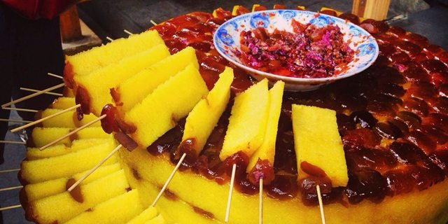
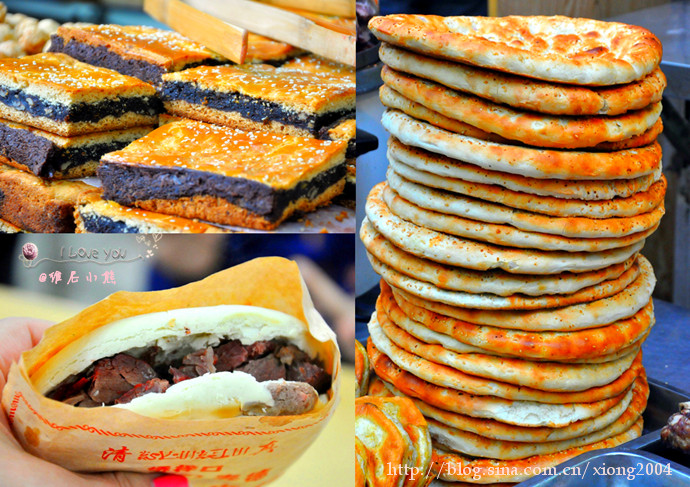
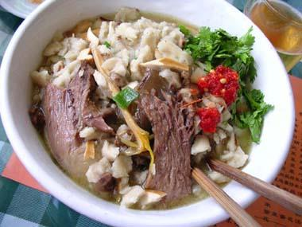

Food
North Guangji Street/Huis' Street is a great place to get a taste of authentic xi 'an snacks
Of course, a lot of people do not really want to see something related to history right before they leave. In this situation, finding a place to have some Xi'an's delicious food is also a nice idea.
